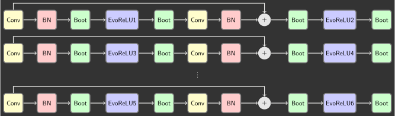
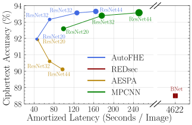
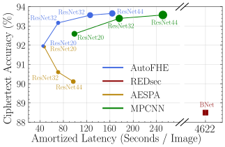

FHE-Compatible CNNs
Computer Vision over Homomorphically Encrypted Data
CVPR 2025 Tutorial
June 12, 2025
how to Adapt CNNs for FHE
- Supported one-dimensional operations under FHE:
- Multiplication
- Addition
- Rotation
Polynomial approximation for non-linear activations
Packing for convolution (Pooling): transfering 3D operation to 1D operation
FHE-Compatible CNNs
| Operations | Support |
|---|---|
| Conv2D | Packing |
| BatchNorm2D | ✓ |
| AvgPool | Packing |
| Linear | ✓ |
| ReLU | Approximation |
| Bootstrapping | ✓ |
Polynomial Approximation for Non-linear Activations
Polynomial Approximation for non-linear activations
- High-degree approximation
- Slow: more multiplications, more bootstrappings
- Accurate: high-degree polynoimals
- Training/fine-tuning: not necessary
- Low-degree approximation
- Fast: less multiplications, less bootstrappings
- Not Accurate: low-degree polynoimals
- Training/fine-tuning: necessary
Polynomials for Approximation
- Monomial Polynomials

- Hermite Polynomials
Depth for Polynomials
- Given a polynomial
- What is the multiplicative depth of the polynomial?
- How many multiplications are required to evalaute the polynomial?
- Is it $d-1$?
- Baby-Step Giant-Step (BSGS) algorithm gives us the minimum number of multiplications $\lceil \log_2(d + 1) \rceil$
Low-Degree Monomial Approximation
- Low-degree polynomial approximation for non-linear activations
- Swish: $p = 0.12050344x^2 +0.5x+0153613744$
- Softplus: $ p = 0082812671x^2 +05x+075248 $
- ReLU: $p = 0125x^2 +05x+025$
- Small depth, low precision, training required
High-Degree Chebyshev Approximation
- High-degree polynomial approximation for ReLU
- Composed Polynomials: $p_{\alpha, 1}$ (degree 7), $p_{\alpha, 2}$ (degree 7), $p_{\alpha, 3}$ (degree 27)
- Approximation for $\mathrm{sgn}$: $p_{\alpha}(x)=p_{\alpha, 3}(p_{\alpha, 2}(p_{\alpha, 1}(x)))$
- Approximation for ReLU: $r_{\alpha} = \frac{x+xp_{\alpha}(x)}{2}$ (ReLU=$\frac{x+x\mathrm{sgn}(x)}{2}$)
- High depth, high precision, training not required
Hermite Polynomial Neural Network Training
- Polynomial neural network training suffers from numerical instability
- Backward Propagation: clip gradients
- Forward Propagation: cannot do clipping under FHE (function $\mathrm{max}$ is not a polynomial)
- AESPA: Basis-Wise Normalization
- Normalize polynomial basis separately: $h_0(x)$, $h_1(x)$, $h_2(x)$, $h_3(x)$
- Aggregate polynomial basis by trainable weights Approximation for $f(x)=\gamma \sum_{i=0}^d \hat{f_i}\frac{h_i(x)-\mu_i}{\sqrt{\sigma_i^2+\epsilon}} +\beta$
Packing for Convolutional Layers
SISO Packing for convolution
- Single-input-single-output packing: pack a 3D tensor channel by channel
multiplexed packing for convolution
- Take advantage of SIMD to reduce the complexity of rotation and multiplication
- Repeated packing: $x^{(M)} = [x, x, \cdots, x]$ with $M=\lfloor \frac{N}{2d} \rfloor$ copies
- Multiplexed packing: pack different channels interchangeably
co-designing between CNNs and FHE
Polynomial Approximation of ReLU and Bootstrapping
- Homomorphic evaluation architecture of ResNets
- Experimental results on CIFAR datasets
- High-degree polynomials $\rightarrow$ Levels $\Uparrow \rightarrow$ Bootstrapping $\Uparrow \rightarrow$ Latency $\Uparrow$
- High-degree polynomials $\rightarrow$ Approximation Precision $\Uparrow \rightarrow$ Accuracy $\Uparrow$
Limitations of handcrafted architectures
Manually Designed FHE Evaluation Architecture
- Precise approximation of ReLU function.
- Same ReLU approximation is used for all layers.
- Every ResBlock has bootstrapping layer.
- Evaluation architecture specialized for ResNets.
Co-design CNNs and FHE systems
- Security Requirement
Encryption Parameters
- Cyclotomic polynomial degree: $N$
- Level: $L$
- Modulus: $Q_l=\prod_{i=0}^{l} q_l, 0 \leq q_l \leq L$
- Bootstrapping Depth: $K$
- Hamming Weight: $h$
- Latency
- Prediction Accuracy
Polynomial CNNs
- Conv, BN, pooling, FC layers: packing
- Polynomials: degree -> depth
- Number of layers: ResNet20, ResNet32
- Input image resolution
- Channels/kernels
space of Homomorphic neural Architectures
How to effectively trade-off between accuracy and latency?
Our Key Insight
How to optimize end-to-end polynomial neural architecture?
Joint Search for Layerwise EvoReLU and Bootstrapping Operations

- Flexible Architecture
- On demand Bootstrapping
benchmark Homomorphic architectures on Encrypted CIFAR
Experimental Setup
Dataset: CIFAR10
- 50,000 training images
- 10,000 test images
- 32x32 resolution, 10 classes
Hardware & Software
- Amazon AWS, r5.24xlarge
- 96 CPUs, 768 GB RAM
- Microsoft SEAL, 3.6
Latency and Accuracy Trade-offs under FHE


 

| Approach | MPCNN | AESPA | REDsec | AutoFHE |
|---|---|---|---|---|
| Venue | ICML22 | arXiv22 | NDSS23 | USENIX24 |
| Scheme | CKKS | CKKS | TFHE | CKKS |
| Polynomial | high | low | n/a | mixed |
| Layerwise | No | No | n/a | Yes |
| Strategy | approx | train | train | adapt |
| Architecture | manual | manual | manual | search |
- MPCNN: Low-Complexity Convolutional Neural Networks on Fully Homomorphic Encryption Using Multiplexed Parallel Convolutions, ICML 2022
- AESPA: Accuracy Preserving Low-degree Polynomial Activation for Fast Private Inference, arXiv 2022
- REDsec: Running Encrypted Discretized Neural Networks in Seconds, NDSS 2023
- AutoFHE: Automated Adaption of CNNs for Efficient Evaluation over FHE, USENIX Security 2024
Summary and Takeaway
- Polynomial Approximation : solve the conflict between depth and precision.
- Packing for Convolutional Layers : use SIMD to reduce rotations and multiplications.
- Co-designing CNNs and FHE : find the optimal homomorphic architecture.